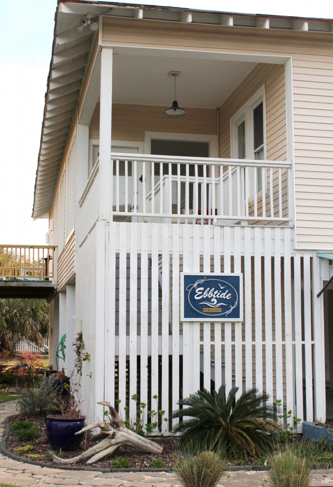
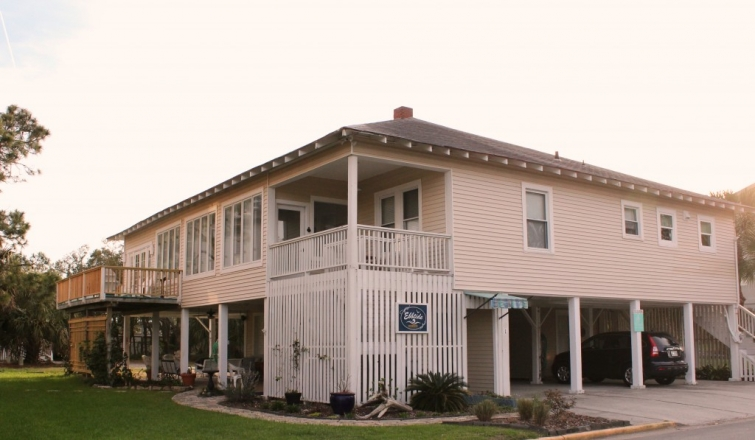

.png)
.PNG)
.PNG)
.PNG)
.PNG)
.PNG)
.JPG)
.JPG)
.PNG)
.PNG)


Oh my goodness do I have a treat for you today, and I cannot even begin to tell you how excited I am to share it with you!! In my last post, I confessed how much I loved the Breeze Inn, Mary Kay Andrews’ beach cottage on Tybee Island, and I even contacted Mermaid Cottages about staying there last week. Do you remember I said we didn’t stay at the Breeze Inn? Well folks, when I contacted Diane at Mermaid Cottages, she asked if we would like to stay in MKA’s larger home, Ebbtide instead. Would I? WOULD I? You better believe I would!! (Who in their right mind wouldn’t??) So today I want you to enjoy the wonderfully old fashioned beach house upon which Mary Kay Andrews and her husband have worked their magic.
So why the larger house?…especially when everyone loves the Breeze Inn cottage, and “It is exactly what a beach house should look like” (to quote Pam C.’s comment from the post the other day 🙂 ) The charming beach cottage was getting to be a little crowded when the entire family was there because they were adding grandchildren. So they began looking for a place that would be big enough to handle their whole family comfortably.
Diane (the same angel above from Mermaid Cottages) is actually the one who found it for them – a 1932 old raised style Tybee cottage with its original wood floors and heart pine paneled walls. It had been in the previous owner’s family since 1945, and it came totally furnished. (Can you imagine??) They closed on this dream house right before Christmas in 2012, and then they got to work.
When you enter Ebbtide, you walk right into the kitchen. This area required quite a bit of work because they removed the vinyl flooring to uncover old oak floors, had all new cabinets built (on site),added granite countertops, had subway tile installed for the backsplash, and purchased new appliances. Just in case you would like to see the before, here it is:
Oh yes, one more thing…they painted all the ceilings Benjamin Moore Morning Sky Blue and the walls Benjamin Moore Moonlight White, and oh what a difference it made! Of course, the red and white checked valances were the perfect touch to me. 🙂

Mary Kay Andrews is an estate sale-thrift store-antique shop-yard sale-Craigslist queen. (I really think she just needed a larger house for a place to put all the treasures she has accumulated from her shopping…shhh…don’t tell her I said that. 🙂 ) Anyway, there are soooo many treasures in Ebbtide, there is no way I could tell you about all of them, but here are a few things to note.
The cast iron kitchen sink there came from Pinch of the Past in Greensboro, Georgia, and the grocery sign was picked up from The Depot at Gibson Mill in Concord, North Carolina (which looks like a really interesting place to shop!) Mary Kay’s husband built the frame and painted it black.
I loved the blue plates displayed in that little corner there.
Right off the kitchen is the dining area. Originally there was a wall separating the two spaces. Here is how that wall looked in its former life.
And now here is that view. That “Private Baths” sign there came from Habersham Antiques Market in Savannah. (I don’t know how in the world she remembers all the places she finds these things!)
The dining room table is big enough to seat a crowd and is surrounded by black school house chairs (like mine! 🙂 ) with slipcovered armchairs at the ends.
And yes, I am dying over those chairs! Don’t you think they would be perfect somewhere in my house of gingham galore?
That old grocery store sign came with the purchase, and it was one of the first things that MKA was smitten with when she looked at the house for the very first time.
The dining area also houses bookcases that hold a variety of dvds, games, and books for a family’s enjoyment.
Now look on that top shelf. She has a Jan Karon book for children! Miss Fannie’s Hat is perfect for Easter. (And no, I did not turn it to face out like that. It was already like that, thank you very much. 🙂 )
To the left of the bookcases is this lovely old buffet with a framed vintage bathing suit displayed above it. The lamps were made from galvanized tin ice cream churns found on Ebay. She was looking for wooden ice cream churns to use there but liked these better.
Off to the side of the dining table is this extra long table that is perfect for serving buffet style. I thought the baskets filled with an assortment of linens was such a smart idea. The framed swimsuit there on the wall hides the new circuit box they had to install in Ebbtide.
Here is a better view looking back towards the kitchen.
Behind that long buffet table is the living room, and the two areas all flow together as one big space. Here is a before shot of that view.
And here is how it looks today.
They sold almost all of the furnishings that came with the house through yard sales and Craigslist, and then they brought in many items that had been stored in their own basement. A couple of the living room armchairs were purchased at TJMaxx.
One of my favorite things in that room was the remote control electric candles on the mantel. (Yes, I have a bad addiction to lights.) My husband knows I am now looking for some like that. (Of course the wicker wrapped jugs and seashells were beautiful as well.)
A Miss Mustard Seed project inspired Mary Kay to paint the dresser to look like the Union Jack flag, and her husband taped off the design for her.
Here is another before shot of the area with the sofa.
And now see how wonderful it looks with its collection of paintings resting on shelves built by Mr. MKA from an Ana White plan.
A high shelf above the door holds a collection of vintage sand pails. Too cute!
And how about this for a before and after? This old black and white photo was in a drawer with placemats.
And now standing in the same spot as the photographer from before…
Quite a change, right?!
I am going to end our house tour now because this post has gotten waaaaay too long, but I will continue it with Part 2 this weekend. I can’t decide if we will wander through the bedrooms or the porches, but I know you will love both of them. 🙂
Don’t forget about the giveaway of three Mary Kay Andrews’ books (one of them autographed by her!) and other assorted goodies. You can check out the details here.
**UPDATE: Giveaway closed on 4/16/14. Winner was announced on 4/17/14. Congratulations to Paula B.!
Have a happy day!
Until next time…


.PNG)
How much for 7 nights?
——————————————————————
It depends on the time of year. Contact them at: mermaidcottages@gmail.com They’ll be able to tell you.
Kelly
My goodness, this is what I get for not reading my blogs for a week. I just CANNOT BELIEVE you stayed at Ebbtide!! I just LOVE MKA and she is the reason that we vacation in Tybee every year. My husband and I love it so much that we are now working on a plan to make it our future home. My family isn’t big enough to justify a stay at Ebbtide, but we often go down right after Christmas, so I’m thinking that would be a good time to stay there and pay winter rates. Thanks so much for all of the info and pictures. Looks like you hit all of the best places to eat in town, too. Oh, next time you are there see if the city council meetings are showing on the local tv station (crazy, I know. We are big party animals…lol) My husband and I had more fun watching those while we were down there one winter. Hilarious!! MKA really needs to take that council and make a book out of it.
All I can say is….what a house!
Take care.
Lovely Transformations!
Jan here – with Mermaid Cottages! Thank you so much for the wonderful blogs about our cottages – we have already started taking reservations from your readers! Ask for Mermaid Jan!
Hi Kelly
Thanks so much for sharing this transformation with us! What a difference white paint can make. I love the red gingham and all of her collections. The sand pails are perfect as a valance at a beach house. Another place to pin.
Love all the cottages to rent on Tybee — my son went to college at SCAD so only “stopped by” to see the beach. On our to do list to stay out on the island for a vacation.
This is what a beach house should look like! Love the blue and white checked chairs
Beautiful! Even just painting the walls white made a huge impact, but all the small touches and accessories made it amazing! Is it on the south or north end?
Kelly
I love this beach cottage! I could envision a wonderful relaxing time in this place…love those framed bathing suits adorable!
Oh my I love it!!!! The hubs and I have been wanting a beach house for the past several years. We have a place that was left to my siblings and I in Ocean City, Maryland but it isn’t at the beach. Not the same as having a place at the beach. We never go and enjoy it for that reason. We would love to find something around Ormond Beach, FL so that we could be around our son and some friends. We will be on vacation next week and will be in Charlotte, NC. The guys will be at the raceway enjoying the 50th anniversary of the mustang while us girls are going to The Depot at Gibson Mill. I will take in all the sites of the pretties for you. I would love to find a treasure or two. Thanks again for sharing such beautiful places. I always enjoy visiting your site to travel to places that I have never been. Pure enjoyment.
What a wonderful place she has created! I love those vintage beach pails.
Love it! So much fun to see all the little touches. Like I said in the last post, my kind of beach house. I would love to decorate one. Thanks for sharing. Would love those books too!
I can’t believe she picked the same color scheme I did for my dream beach house right down to the Union Jacks. And I adore her books.
On a separate note, we had big news this week. My sister’s latest book, New Orleans’ Best Ethnic Restaurants, was chosen by Amazon for its Great American Eats listing. Her book is a culinary guide to the city with 100 restaurants profiled and contributing one recipe each. We’re so happy for her
I love the house, but really love the collection of sand pails. Also like the linens in wire baskets and tubs.
We painted the paneled wall in our kitchen in Perry. Such a transformation from dark to light and cheery. I’ve just finished the Breeze Inn book – loved it!
What a lovely home! It reminds me of the beach cottage my aunt and uncle owned and has now passed down to the kids and grandkids. Their cottage is probably as old as the one in this post. It seemed to have a lot of the same style. The paneled walls, the fireplace. They even had a sword fish hanging on the walls. haha Oh yea, it on Amelia Island!
I love the freshness of the white walls. I think my favorite was the blue plates in the corner of the kitchen. Something about blue and white I just love!
It’s official! I have got to go the beach this summer!
Well I’m with you about the gingham covered chairs and the red accents. Just love those very much! Amazing how a coat of white paint can do to a room. Wish I would have gone to Tybee Island from Savannah two years when I visited Georgia. Oh well, must make another trip.
Wonderful Before & After pics! Really enjoyed seeing them.
Oh My !!!!! ♥♥♥ I love this house! What a great transformation! All the little touches are perfect. The varnished pine walls brought back memories of the walls in our our first home, ……painting them was such a chore, no Kiltz back then. We had to sand them first and then use oil based paint. Mary Kay Andrews did exactly what needed to be done to create this jewel of a home. Thanks for sharing!
You have done it again!! I don’t know how you could pull yourself away from there and go back to work—didn’t you just want to skip right into summer vacation?? I have waited all day to look at this posting because I’ve been helping a student teacher with an interview from a reading teacher (me) and what aspects of my life drew me into the teaching field. And when I looked back over my lifetime it points to my small home town in Ky. and the wonderful teachers I had over the years. These beach cottages are so special—the Besty Ross bread sign stoled my heart—back in the day–that was the only bread my family used and the little girl looks like my girls with the blue eyes and blonde hair! The RED sloshes and the buffalo plaid chairs screamed your name !! This is the one for you and I will take the smaller one!! Happy weekend!!
OH! This place….sunwashed, seakissed. LOVE it….I think we need to rent it next! What a gorgeous job they did…right down to the most minute detail!
What a sweet house. I love the kitchen and seeing those red checked curtains is making me change my mind about the fabric I was going to use in making my own kitchen curtains! No problem though I have red checked fabric on hand 😉 I’m so happy you and your family had a nice get-away over Spring break!
Kelly,
Are you still vacationing there? What a charming house. I love the collection of metal sand pails. So cute.
I look forward to seeing more of this house.
Karen
WOW!!I can’t believe that is the same house from the before and after pics! What a difference some fresh white paint makes. I also love the blue ceilings too!
I have never seen framed bathing suits before but think they they look really cute because they are vintage. I even love the vintage sand pails all together on the shelf.
All of this makes me want to decorate my own house into a “beach house” even though I don’t live by the beach 🙂 Thank you so much for sharing!! I can’t wait to visit Tybee Island this summer!!!
Wow! This beach house is perfect. It’s so homey and inviting. I can imagine many generations making many fun memories in a home like that. That painted dresser is too great. Thanks for another great post!
Hi Kelly,
What an amazing transformation! I love the colours… and I think I would like to start a vintage sand pail collection myself. So cute.
Can’t wait for Part 2.
Spring is almost here with most of the snow gone. Now we just need those buds to start showing their cute faces 🙂
Take care
Cath
These posts are something delightful to look forward to with all the diverse decor, the use of collectibles, colors and textures.
It makes me realize how anything can be useful and/or decorative.
Keep inspiring us. Have a great Spring weekend!
Beautiful! And I want those checked chairs!!!
-Shelley
omg !!!!!!!!!!! LOVE it ALL !!!!!!!!!!!!!!!!! Thank you SO, SO, SO much for sharing !!!!!!!!!!!!!
What an amazing transformation! I am head over heels for the framed wooden bathing suits – so clever! And the pails above the door – so cute.
Happy Friday!
Your pictures are the best that I have seen of Ebb Tide!!! the house looks even better than in the pictures I have seen before! Classic MKA….those old sand pails and framed vintage suits. I purchased a vintage suit of eBay and am hoping to frame it soon! I think MKA needs to post a tutorial!
I hope to return to Tybee soon….and still love the Breeze Inn….but wow…Ebb Tide sure is pretty also. Where is Ebb Tide on the Island???? Is it near the south side by little tybee and AJ’s dockside, mid island like the Breeze Inn or the north side????
WOWSERS! Love the before & after pics for comparison. The red, white, & blue color scheme is great & I love the vintage swimming suits. This is a great beach house! We love going to Tybee & I’m craving a “Burton’s By the Beach” fish taco right about now. Have a great weekend, it’s going to be beautiful!
I so agree with Vickie–“What a fun place”. There’s fun and unexpected elements all around. MKA has an eye for collecting and decorating. Don’t you just love the kiddo’s sand buckets? I do!!
My house is mostly leather, rock, and cedar. These pictures make me want to paint everything some color of the rainbow! Or all white. 🙂
WOW! What a difference a little…or a lot…of paint can make. I stayed in beach houses that looked like the “before” photos probably 40 years ago. (Even back then I wondered what could make them look better.) I do love all of the vintage “finds”. Great post, Kelly! I want to go there! (And, I would love to win the books and take them to the beach to read.)
Hi Kelly, just me again. Here is that tutorial on remote candles I spoke of. This blogger has a sweet porch too.
http://justgrandeko.blogspot.com/2012/05/candle-magic.html
To have a bunch out on your gorgeous porch would be wonderful.
Debra
WOW….you are one lucky girl to get to stay in such a lovely place. I love all the white with the touches of blue and red and the fun “finds.” Mary Kay has such a great knack for finding the right things to go together. What faun time you must have had!
What a fun place to spend some time!!
Did you sleep while you were there? I think I would be up all night just looking at everything. You can certainly find the best places to go and thanks for taking us along…if only in our dreams.
Have a great weekend.
Jeanne
OMG (as the kids say) I love this! I would love it if my own home looked like this. Love the white woodwork, blue ceiling, red and blue touches – all of it! It just looks so comfortable and inviting! Thank you once again for sharing. I hope you have a wonderful weekend. It’s supposed to be sunny and warm here in middle Tennessee so I hope to get outside and work in my garden and flower beds.
Hi Kelly, I love this cottage! The kitchen is just perfect. Wow! Thanks for sharing it with us!
Oh stop! Did you have a fun vacation or what! Loved seeing all that vintage goodness. That buffet and long serving table are wonderful. Mary Kay’s got great decorating style and what great finds. Absolutely loved the living room. Can’t wait to see your Part two Kelly. Wonderful share. Reading your comment about the remote control candles made me think of a blog I have frequented called “Just Grand”. Maybe you are familiar with it? Seems to me, Erin created her own remote control candles on her gorgeous home porch. I think she gave a source for the candles. She and her husband have also restored a beach cottage in lower Michigan. Such a sweet little one that will make you drool. Its so adorable. Her beach cottage was just featured in Cottage Style magazine. Oh, those who are living my dream…
Debra
Wow what gorgeous beach houses!! Mary Kay Andrews has excellent taste. I’m loving the quilt that’s draped over the chair. Those white walls were a smart choice too – it makes the rooms seem fresh and cheery. Love it!
Oh be still my heart!!!! What a great beach house! Girl, you are the queen of keeping a good secret …… Can’t believe you were able to wait until today to reveal this gem AND you actually stayed there……you really did have a great spring break !
Okay Kelly, do all her great “finds” make you change your mind about vintage and thrifting??
I much prefer the big house, Kelly! Loving all the red touches and the painted wood paneling. Maybe I should write some books so I can buy a beach house at Tybee Too!!lol….Thanks for sharing.
What a fabulous transformation. I just love the framed swimsuits. I’ve seen it in another house and loved it there too. What memories it must bring back.
Sam
I’ve seen her cute cute place before, but fun learning more about it and where she shops. Love those buffalo checked chairs!
Oh.my.goodness! Who would have thought paint could make such a HUGE transformation!!! It completely went from “hunting lodge” to “beach house” as soon as the walls and ceilings were painted. Of course, the right styling and accessories helped, too. 🙂 I am in love with the kitchen. I have always been a sucker for white cabinets and red-checked curtains, so it had me at hello. I think I may skip school today and head for the beach! Thanks for sharing!